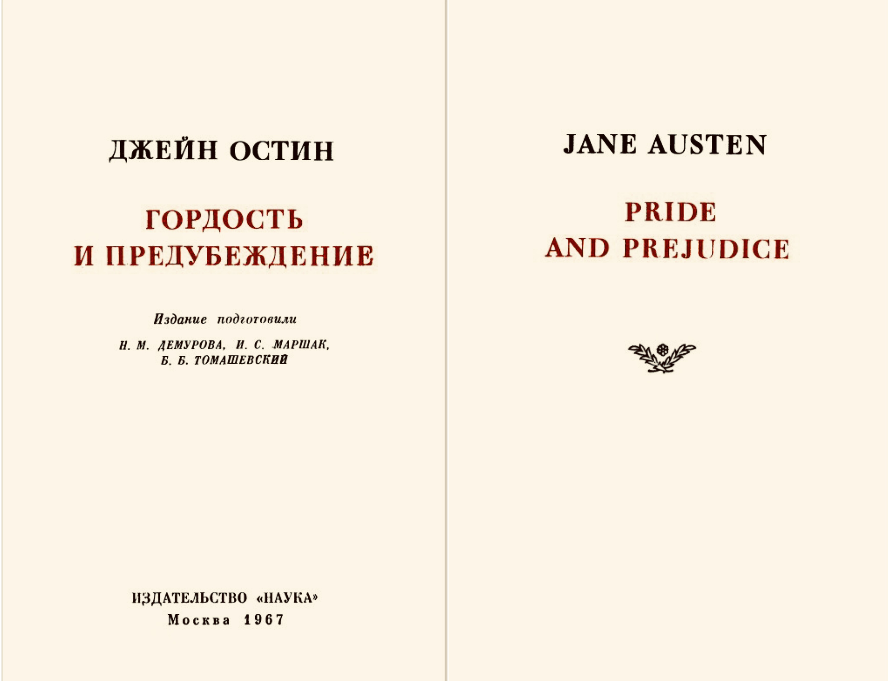
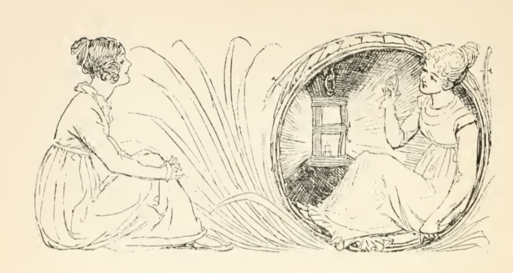

Джейн Остин родилась в семье священнослужителя, однако в современном литературоведении отмечают, что функция религии в ее текстах ограничивается ритуальными практиками, нормами социального взаимодействия конца XVIII века, но, например, не включается в философию персонажей, что рассматривается как важная деталь для реконструкции взглядов писательницы.
У Дж. Остин было шесть братьев и сестра Кассандра, с которой они поддерживали близкие отношения на протяжение всей жизни. Недолгое время (предположительно не более двух лет) девочки посещали школу, но в 1786 году, когда Джейн было 11, вернулись домой, где у них была возможность пользоваться библиотекой отца и помощью получающих образование братьев, чтобы продолжать обучение.
Примерно в этот же период Остин начала писать первые художественные тексты для прочтения в семейном кругу (отметим, что и мать Джейн – Кассандра – в раннем возрасте увлекалась писательством). Позже Остин собрала ранние произведения в трех тетрадях, которые получили название «Ювеналия». Две из них хранятся в «Британском музее», содержат в себя как прозаические, так и
поэтические, драматические произведения. В девических текстах Остин фокусируется на женских персонажах и их историях, при этом конфликт часто строится вокруг того, что героиня нарушает социальные нормы (от правил приличия, касающихся приемов пищи, т. е. переедания, до бегства с женихом).
Женская жизнь становится предметом литературного осмысления всех последующих текстов Остин, однако в поздних работах писательница также начинает разрабатывать романную структуру и свойственный ей иронический стиль повествования. В 1809 году, после смерти отца и переезда с матерью и сестрой в дом в поместье одного из братьев, Остин
перерабатывает старые сочинения. Так, с 1810 по 1815 год удается анонимно опубликовать 4 романа: «Чувство и чувствительность», «Гордость и предубеждения», «Мэнсфилд парк» и «Эмма». Исследователи отмечают, что жизнь исключительно в женском обществе способствовала литературной деятельности Остин –
мама писательницы занималась садом, сестра вела быт и следила за финансовым положением. Таким образом, Остин давали возможность заниматься созданием и редактурой художественных текстов.
В последние годы жизни Остин, несмотря на болезненное состояние, работала над двумя романами, один из которых – позже изданный как «Сэндитон» – не успела завершить. Семья Остин обратилась за медицинской помощью, но состояние писательницы ухудшалось, и в 1817 году Остин умерла. Ее последние тексты – «Доводы рассудка» и «Нортенгерское аббатство» – были посмертно изданы братом, впервые с указанием имени писательницы.
Переписка Остин с сестрой частично уничтожена самой Кассандрой, которой Остин завещала почти все имущество.


Рецепция:
Романы Дж. Остин не сентиментальны, напротив, в них преобладает реалистическое и рациональное, что, как замечают исследователи жанра,
было не свойственно современникам писательницы. Кроме того, Остин конструирует повествование вокруг частной жизни персонажей, «исследования» психологии героинь и героев,
в отличие, например, от исторического романа, популяризированного В. Скоттом. Отметим, что Дж. Остин получала предложение о написании произведения в жанре исторического романа
от принца Кобургского, однако отказалась. С нашей точки зрения, это обусловлено не только тем, что Остин, по замечанию самой писательницы, не способна работать в подобных жанрах, но и ее отношением к проблемам сюжета,
героя (героини) литературы и исторического знания, которое писательница сформулировала в 15-летнем возрасте в пародийном сочинении «История Англии», критикующем притязания историков на точность, позже подобную мысль выразит и одна из героинь
«Нортенгерского аббатства»: «Ссоры пап с королями, войны и чума на каждой странице! Мужчины ни на что не годны, а о женщинах вообще ни слова – до чего же это скучно!». Таким образом, взгляды Остин можно сопоставить с позицией историков повседневности, во второй половине
XX века сформулировавших идею изучения жизненных практик различных социальных слоев общества. В художественных сочинениях писательницы главные героини – представительницы среднего класса – становятся носительницами нравственных позиций. Остин, действительно, преобразует романную структуру,
модифицирует женских персонажей, однако отметим, что на ее работы оказала влияние английская писательница Фанни Берни, – так, именно из романа Берни «Сесилия» заимствовано выражение «Гордость и предубеждение» – что может быть свидетельством важности сепаративного исследования женской литературной традиции.
Стилистические и жанровые особенности произведений Остин, как мы отметили выше, отличаются от тех, что характерны для исторического романа. Однако, несмотря на это, художественные сочинения писательницы получили положительный отзыв В. Скотта, который выделял в них реалистичность повествования и психологизм героев.
Отметим, что другой автор, – М. Твен – тексты которого, напротив, более сопоставимы с произведениями писательницы (модификация романной структуры Остин оказала влияние на развитие европейской литературы), воспринимал произведения Остин более «критично». В письмах Твена встречаются не только иронические замечания,
но и описания воображаемых жестокостей и насилия в адрес писательницы, совершаемых от лица самого литературного деятеля. Таким образом, отношение Твена к Остин выражено в фемицидных комментариях, но не в последовательном анализе текстов писательницы. На наш взгляд, это свидетельствует о том, что рецепция Твена
обусловлена не реальным содержанием сочинений Остин, но женоненавистническими воззрениями Твена и эпохи.
Конструктивный анализ произведений и жизни Остин встречается в эссе В. Вулф «Своя комната», в котором последняя исследует положение женщины-писательницы. Так, Вулф приводит фрагмент мемуаров племянника Дж. Остин, из которого следует, что писательница стеснялась своей литературной деятельности: если кто-то из прислуги, гостей заставал
ее за письмом, она прятала сочинения. Кроме того, Остин приходилось работать в общей комнате, так как у женщины, что особенно важно для Вульф, не было возможности иметь личное пространство, кабинет. Таким образом, Дж. Остин сталкивалась не только с общественным сопротивлением (не могла публиковать тексты с указанием авторства),
но и с бытовыми трудностями, которые сопровождают жизнь женщины.
С точки зрения Вулф, специфичность, «победа» Остин заключается в том, что, несмотря на подобные условия, она (и Эмили Бронте) отстаивала свои взгляды, продолжая писать как женщина. Критические статьи, правила для романисток, престиж мужской литературы – реальность,
в которой приходилось существовать Остин и другим писательницами, имена многих из которых оказываются забыты. Однако Остин конструирует художественные тексты, ориентируясь на собственные убеждения как в 13-летнем, так и в 30-летнем возрасте: «Нужно было быть очень стойкой молодой женщиной в 1828 году, чтоб устоять против всех щелчков по носу,
отчитываний и обещаний призового места», как пишет Вулф. Именно такая позиция способствовала модификации женских образов в текстах Остин, писательница отказалось от героинь, изображенных исключительно относительно другого пола. С точки зрения Вулф, подобная несамостоятельность женских персонажей в предшествующих текстах обусловлена не только тем, что они изображаются
как матери, жены, любовницы, но и мужской призмой, исходя из которой женщины рассматриваются ограничено. Позже схожую идею разовьет С. де Бовуар, проанализировав ангелизацию и демонизацию героинь. Дж. Остин, напротив, конструирует сложные женские характеры, делает героинь носительницами рациональной позиции и выстраивает повествование таким образом, что жизнь женщины становится ядром в структуре текста.
Библиография:
Bloom H. British women fiction writers of the 19th century. Philadelphia: Chelsea House Publishers, 1998.
Blain V. The Feminist companion to literature in English : women writers from the Middle Ages to the present. New Haven: Yale University Press, 1990.
Ливергант А. Я. Викторианки. НЛО, 2023.
Первушина Е. Гордость и предубеждение в романе Джейн Остин «Гордость и предубеждение»
Brown, Lloyd W. Jane Austen and the Feminist Tradition. // Nineteenth-Century Fiction, vol. 28, no. 3, 1973, pp. 321–338.
Woolf V. A Room of One’s Own. London : Hogarth Press, 1935.
Beauvoir de S. Le deuxieme sexe. Paris: Gallimard, 1949. P. 172.